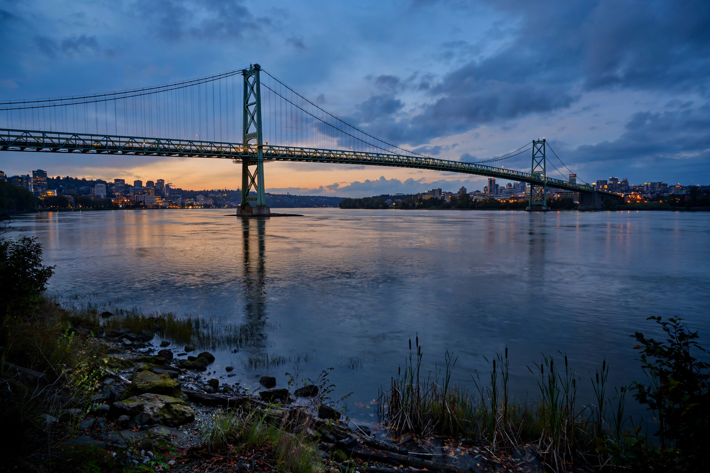

Ambassador Bridge
| Ambassador Bridge | |
|---|---|
 | |
| The Ambassador Bridge between Detroit and Windsor | |
| Carries | 4 lanes of traffic (I-75 / Highway 3 connections) |
| Crosses | Detroit River |
| Locale | Detroit, Michigan, U.S. – Windsor, Ontario, Canada |
| Total length | 2,300 m (7,500 ft) |
| Opened | November 15, 1929 |
The Ambassador Bridge is an international suspension bridge across the Detroit River that connects Detroit, Michigan, United States, with Windsor, Ontario, Canada. Opened in 1929, it was the longest suspension bridge in the world at the time, with a main span of 564 metres (1,850 ft). The bridge is owned by the private Detroit International Bridge Company.
The crossing is one of the busiest international border crossings in North America by trade volume: for decades roughly a quarter of all merchandise trade between Canada and the United States — much of it automotive parts and vehicles — has passed over the bridge. More than 40,000 commuters, tourists and trucks cross on a typical day.
Second span controversy
For decades the bridge's owner, billionaire Manuel "Matty" Moroun, sought to build a twin span while opposing a publicly owned rival crossing. After years of litigation, Canada and Michigan proceeded with the separate Gordie Howe International Bridge downstream, under construction from 2018 and designed to provide a direct freeway-to-freeway link that the Ambassador Bridge lacks. In February 2022 the Ambassador Bridge was blockaded for about a week by protesters associated with the Canadian "Freedom Convoy", halting cross-border trade and drawing international attention.
See also
Detroit River · Gordie Howe International Bridge · Suspension bridge